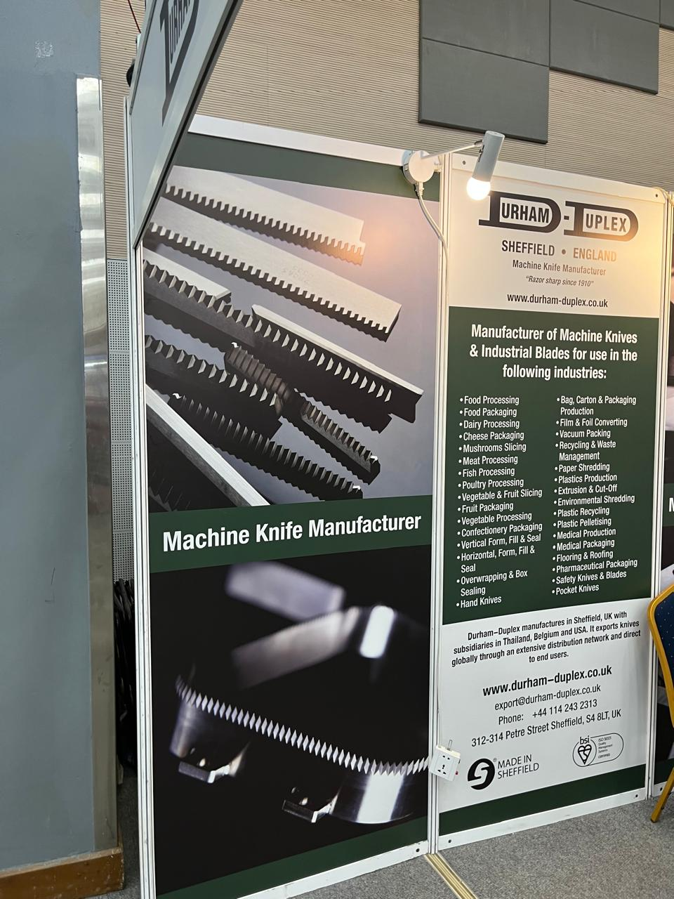

Day 01: The Future of Plastics
Day one was an immersion into the core of the industry: packaging systems and material science. I focused on the companies redefining how we cut, fill, and preserve products.
 The buzzing atmosphere of the Propak main hall.
The buzzing atmosphere of the Propak main hall.
Durham-Duplex
From Sheffield, UK, these specialists showcase a century of precision. Their industrial knives are the silent engines of processing lines worldwide.

Palm Boxes
Innovative food-grade polyethylene ice boxes. Using polyurethane foam injection, these units offer world-class thermal retention.
Watch the Palm Box insulation demoPro Packaging Limited
Leading the green charge with bagasse-based containers. Utilizing sugarcane waste to replace plastic is a game-changer for eco-friendly logistics.

Day 02: Office & Strategy
Day 2 was a pivot. We spent the day at the regional office to analyze the data gathered on Day 1. This allowed us to strategize our approach for the final day, ensuring we targeted the most impactful international interviews for Day 3.
Day 03: Global Innovations
Our strategy paid off. Day 3 was a deep dive into high-tech machinery and raw material engineering from Italy, India, and Vietnam.
Uniloy
A global leader offering four distinct blow moulding technologies. Their booth was a masterclass in specialized industrial container production.
GCC Plastics
Specializing in Calcium Carbonate (CaCO₃) and filler masterbatches. Their materials are fundamental for PVC manufacturing and electric cabling.
Thermax
Engineering for a cleaner world. From industrial boilers to water treatment, Thermax focuses on helping factories optimize energy efficiency.
CMI Industries
High-technology packaging lines for pharma and cosmetics. Beautifully engineered Italian machinery for filling, capping, and labeling.
Maruti Plastotech
Specialists in rope-making technology. Their PLC-controlled systems are designed for high performance with minimal energy waste.
Final Reflections
Three days at Propak Expo highlighted one truth: the packaging industry is no longer just about "boxes"—it's about sustainability, AI-driven precision, and global collaboration.